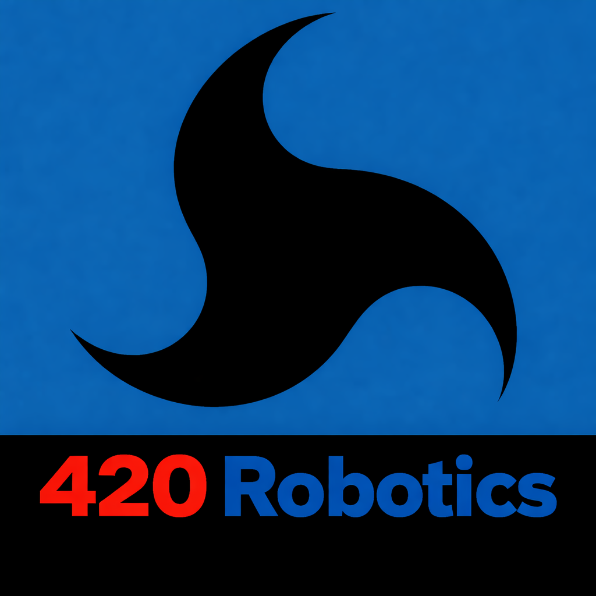

A rigorous, phased engineering campaign to confirm or deny repeatable Mach-effect thrust at greater than 5σ confidence — built on SpaceX's rapid-iteration methodology and 2026's most advanced sensor technology.
This analysis builds on the combined contributions of GPT, Gemini, Claude, and Grok — synthesizing engineering rigor, artifact-hunting methodology, and kill criteria into a single actionable plan. The SpaceX ethos — "build, test, explode, repeat" — is applied to fundamental physics research, creating a campaign designed to reach a binary conclusion efficiently and honestly.
The core question is deliberately narrow: does a piezo-driven mass-fluctuation device produce vacuum thrust greater than 1 μN, phase-reversible, and artifact-independent? If yes, it's a propulsion pivot. If no, SpaceX gains world-class metrology capabilities — which is itself a win.
Vertical integration of sim-to-hardware pipelines using existing Starbase and Hawthorne infrastructure eliminates external dependencies.
Quantum noise floors in sensors and cosmological coupling assumptions represent the most likely failure modes from past experiments.
If signals hold at Month 10, a 3U CubeSat rideshare on Starship provides orbital testing with months-long run times and Starlink telemetry.
Hard go/no-go milestones at each phase prevent scope creep. Culture kills duds fast — 12 months for a clean null, 18 for a confirmed positive.
Edge AI deployed for real-time artifact rejection, trained on historical null data from Tajmar, Eagleworks, and Woodward's own tests.
Skeptics invited for Month 12 audits. Raw data shared via blockchain-timestamped repositories — preventing the "believer bias" that derailed EMDrive research.
Each phase has defined entry criteria, milestone gates, and explicit risk/hurdle assessments. No phase begins until the prior phase clears its gate. No positive result is reported until artifacts are eliminated at 99% confidence.
The most likely outcome is a clean null result at Month 12. Eagleworks spent years on cable artifacts that seemed like thrust. EMDrive consumed credible researchers for a decade. SpaceX's advantage is their culture: they kill losing bets faster than anyone. Below are the specific risks that even SpaceX's resources cannot fully eliminate.
| Risk Factor | Description | Mitigation | Severity |
|---|---|---|---|
| EMDrive Ghost | Eagleworks wasted years on cable artifacts. SpaceX controls in-house wires and amps, but quantum vacuum fluctuations can still noise signals at femto-Newton levels — even in best-in-class facilities. | SQUID sensors provide a physics-limited noise floor. Multiple independent rig builds eliminate shared artifact sources. Red team with full adversarial access. | High Risk |
| Theoretical Tiny Thrust | Even optimistic Woodward calculations yield approximately 10 μN/kW. At those levels, even a confirmed signal sits near the noise floor of most practical applications — raising the question of whether a "confirmed" effect is actually useful. | SpaceX's high-power drive capability pushes into the measurable range. If signal is real but too weak for practical propulsion, negative publication still advances the field. | Medium Risk |
| Cosmological Coupling | Mach-effect theory requires coupling to the inertia of the entire observable universe. This is, by definition, untestable in a laboratory. A positive result would require GR theorists to validate the underlying equations before any engineering conclusion could be drawn. | Crowdsource theoretical review via the scientific community, including X (formerly Twitter) physics discourse. Engage NIAC and academic GR theorists from Month 1, not Month 12. | High Risk |
| Replication Divergence | Subtle fabrication tolerances between nominally identical devices can produce different results — making it impossible to determine if a signal is real or a fabrication artifact specific to one manufacturing batch. | 3D metal printing from identical digital files minimizes tolerance variation. 50+ variants in Phase 2 build a statistical model of tolerance effects before replication begins. | Medium Risk |
| Cryo Integration Delay | Cryogenic vacuum systems and SQUID sensor integration add engineering complexity that can push Phase 1 timelines by 2+ months if custom fabrication is required. | Source SQUID units from commercial vendors (Hypres, 2026 catalog) rather than custom fab where possible. Parallel-build 10 balance variants so delays on one do not block all testing. | Low-Med Risk |
| Believer Bias | Teams that believe in the Mach effect may unconsciously over-interpret marginal signals as positive results — a documented failure mode in past exotic propulsion research. | Blind trial protocol mandatory from Phase 2. External hostile reviewers with institutional incentives to debunk invited at Phase 3. Blockchain data timestamping prevents post-hoc narrative construction. | High Risk |
The 420 Robotics operates without corporate funding, government contracts, or commercial incentives. The research documented on this page — and the AI safety work in Part 1 — is entirely community-supported.
Every contribution, large or small, directly funds testing infrastructure, computing resources, publication costs, and the development of open-access tools that keep this research available to the public. Independent research only survives when the public chooses to sustain it.
Scan the QR code or click the button below to contribute directly via Cash App.
▶ Donations Needed — For Research.png)
Scan to donate via
Cash App · $420robotics For God. For Country. For Humanity.The Mach Effect Gravitational Assist (MEGA) Drive represents one of the most promising — and most rigorously contested — exotic propulsion concepts of the 2020s. The following improvements address its physics foundation, hardware design, measurement methodology, and accessibility for researchers at every resource level.
The existing MEGA Drive blueprint is already a solid, grounded document. These enhancements address the gaps that currently limit its scientific rigor, reproducibility, and accessibility — pushing it from a compelling concept toward a publishable, testable, and community-validated research program.
The theoretical grounding of the MEGA Drive needs explicit connections to current alternative gravity literature and a more rigorous treatment of its 2026-era experimental status.
The hardware design can be meaningfully upgraded using 2026-available materials and electronics without significantly increasing cost or complexity.
Measurement is where past MEGA Drive research has most consistently failed. The following upgrades address the most common artifact pathways.
The existing protocol covers the basics but leaves significant gaps in scaling behavior, statistical rigor, and safety documentation.
One of the most underutilized assets in exotic propulsion research is the global community of well-equipped, highly motivated independent researchers. The MEGA Drive concept should have an explicit accessibility layer.
Serious Mach-effect research is not limited to organizations with eight-figure budgets. The following tiers represent realistic entry points for different types of researchers and institutions.
Whether the Mach effect is real or not — and whether AI systems are as safe as their creators claim — the answers matter too much to leave to parties with financial interests in the outcome. Your support keeps this research free, public, and honest.

